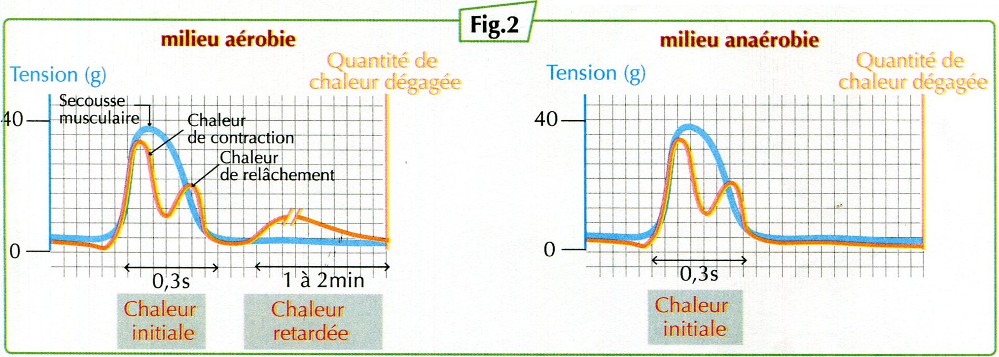

Les phénomènes thermiques accompagnant l’activité musculaire
Lors d'un effort, le muscle se contracte et dégage de la chaleur. Mais cette chaleur a-t-elle une seule origine ?
1. Je formule mes hypothèses
Avant d'examiner les résultats expérimentaux, propose une ou plusieurs explications possibles.
2. J'observe — Milieu aérobie
Un muscle est soumis à une stimulation efficace en présence de dioxygène. On enregistre sa tension et la chaleur dégagée.

Question 1. Identifie les différentes phases du dégagement de chaleur.
Question 2. Compare la durée de ces deux phases.
3. J'observe — Milieu anaérobie
On réalise une expérience comparable, mais cette fois en absence de dioxygène.
Question 3. Quelles chaleurs observe-t-on en absence de dioxygène ?
4. Je compare et je confronte mes hypothèses
Observe maintenant l'ensemble du document.
Question 4. Quelle différence essentielle existe entre les deux milieux ?
Question 5. Ton hypothèse de départ est-elle confirmée ou réfutée ? Justifie.
5. J'explique les résultats
Question 6. Pourquoi peut-on relier la chaleur retardée aux réactions métaboliques aérobies ?
Question 7. Pourquoi la chaleur initiale persiste-t-elle en absence de dioxygène ?
6. Je construis mon bilan
Rédige une conclusion qui distingue les deux chaleurs et précise leur relation avec le dioxygène.
L'activité musculaire s'accompagne d'un dégagement de chaleur initiale, observée en milieux aérobie et anaérobie, et d'une chaleur retardée, observée uniquement en milieu aérobie.
Ces résultats mettent en évidence la participation des transformations énergétiques à l'activité musculaire.
Je réinvestis
Un élève affirme : « Sans dioxygène, le muscle ne dégage aucune chaleur. » Explique pourquoi cette affirmation est incorrecte.